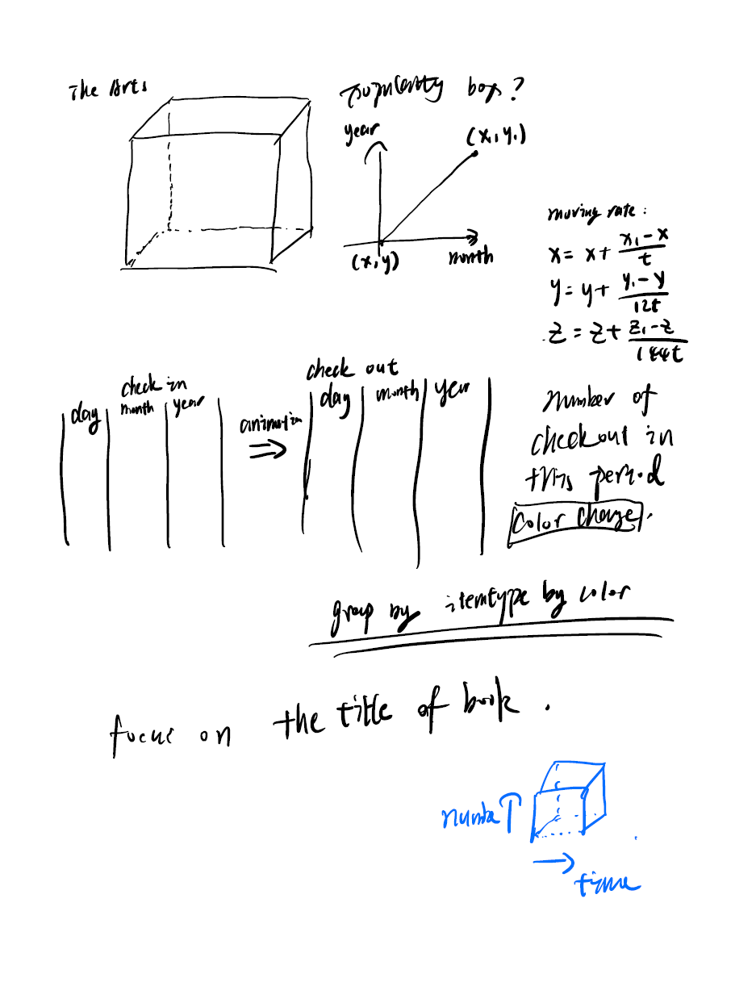

As a continuing exploration of my first project, I have found that the reason
why people spend less time on art class is that the library puts all albums and
music in Dewey class from 700 to 799. Thus, obviously listening to music takes less
time. This project is to visualize the top 5 selling items in the art class, and how
the check-in and check-out dates are structured in both 3d and 4d by making an
amination of the movement from check-out date to check-in date. It looks like a
river in a cube and tesseract, so I call it Data River.
Query
SELECT callNumber, count(*) FROM spl_2016.inraw
WHERE DeweyClass >= 700 AND DeweyClass <= 799 AND year(cout) >= 2015 AND year(cout) <= 2020
GROUP BY callNumber
ORDER BY count(*) DESC
LIMIT 10
SELECT
year(cin) as cin_year,
month(cin) as cin_month,
day(cin) as cin_day,
year(cout) as cout_year,
month(cout) as cout_month,
day(cout) as cout_day,
callNumber
FROM spl_2016.inraw
WHERE (callNumber = "CD 782.42166 N86"
OR callNumber = "CDJ 782.42083 K541"
OR callNumber = "791.45028 N661N 2016"
OR callNumber = "797.12309 B8126B 2013"
OR callNumber = "CD 782.42166 Ad32T")
AND year(cout) <= 2020
AND year(cout) >= 2015
Preliminary sketches
3D Scratch for the cube

4D Scratch for the tesseract
4D Rotation and Projection Matrix
Process
Some image result in 3D
Final result
Video Attached about the whole project, some screen shot of 4d tesseract Data River.